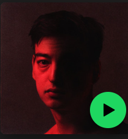
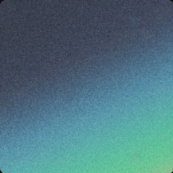

Piss In The Wind

Piss In The Wind was released in 2026. The song has a calm and emotional sound that matches Joji's style. I think it stands out because of its atmosphere, vocals, and simple but memorable production.
Nectar

Nectar was released in 2020. The album combines alternative R&B and pop and includes songs such as "Sanctuary", "Run", and "Like You Do".
SMITHEREENS

SMITHEREENS was released in 2022. The project includes "Glimpse of Us", which became one of Joji's most popular songs.